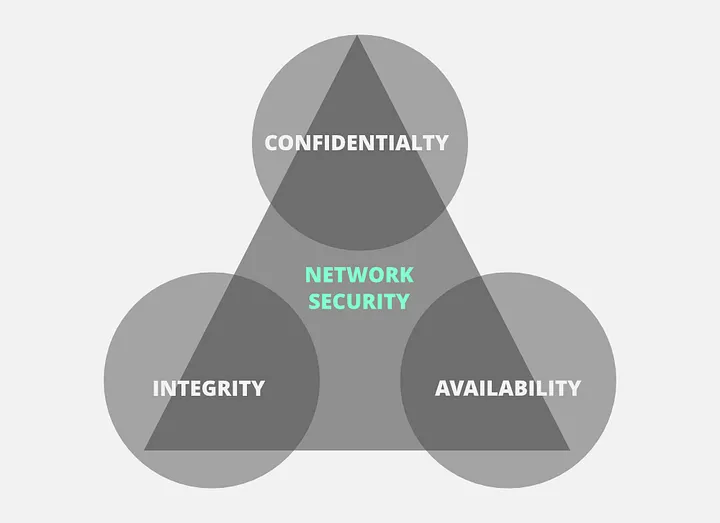

Cryptography and the CIA Triad
Published on 2023-10-20
Category: Misc
Many cryptographic systems are used to enforce Confidentiality, Integrity, and Availability (CIA). The CIA triad is generally viewed as an objective for securing infrastructure. Cryptography’s main goals are to enforce the CIA triad and nonrepudiation.
Confidentiality
Confidentiality ensures that data stays private when it is at rest, in transit, and in use. Cryptography accomplishes confidentiality through symmetric cryptographic systems and asymmetric cryptographic systems:
- Symmetric cryptography: Uses a single key to encrypt and decrypt data.
- Asymmetric cryptography: Grants each user a public and private key for encryption and decryption.
Examples include using deniable encryption on file systems, SSL/TLS for secure tunnels, and homomorphic encryption in cloud computing.
Integrity
Integrity ensures that data is not altered without authorization. Examples include:
- Using digital signatures for secure communication.
- Hashes (e.g., SHA-256) to verify the integrity of downloadable files.
Authentication
Authentication verifies the identity of users. Encryption methods often support this process, such as:
- Symmetric keys for verifying identities before granting access.
Nonrepudiation
Nonrepudiation ensures that the origin of a message can be verified, preventing a sender from denying they sent it. This is achieved using asymmetric keys, like RSA in VPN connections.
Conclusion
Cryptography plays a crucial role in enforcing the CIA triad and ensuring secure communication and authentication. By understanding its techniques, you can better protect data and infrastructure in the modern digital landscape.